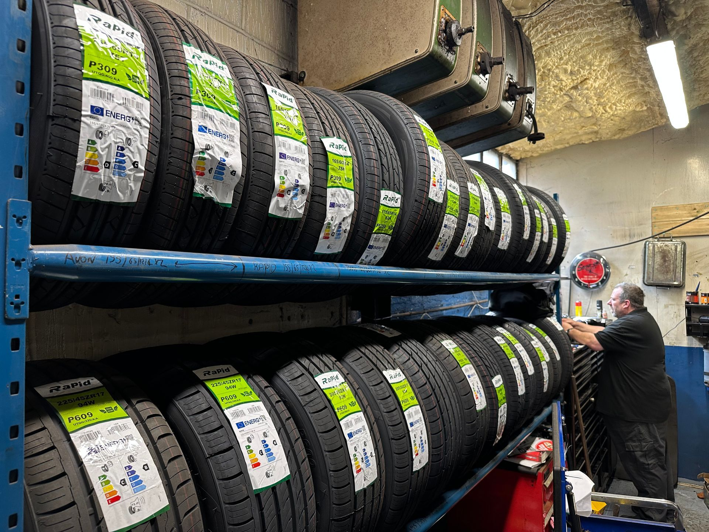
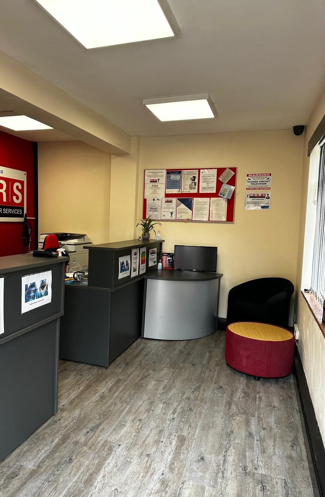

Services
MOTs, servicing, repairs, tyres, wheel alignment, air conditioning and diagnostics — all under one roof in Bishops Stortford.

MOT
To ensure that your vehicle meets safety and environmental standards, it is essential to have it undergo an MOT test. This test examines various aspects of your vehicle to ensure it meets the required standards.
At MARS, we have three highly trained MOT testers who receive yearly training to keep up to date with the latest testing methods. We also recently installed a state-of-the-art one-man test bay to further enhance our testing capabilities. As a DVSA-approved class 4 test site (Test Site Number: 10659), we offer MOT tests starting from just £49.50.
To make things more convenient for you, we provide waiting slots that can be booked in advance. Our location near the town centre also allows you to go shopping while your test is being carried out. Additionally, we offer FREE MOT retests to ensure that any issues that arise are promptly addressed.
Book your MOT
General Servicing
At M.A.R.S., we pride ourselves on being able to service all makes and models of vehicles. Additionally, we offer servicing options that cater to a variety of needs and budgets, starting from just £89! For oil changes the rate is between £120-£150.
If your vehicle is still under manufacturer warranty, you can rest assured that we use only genuine parts to ensure your warranty remains valid. To keep your car performing at its best, we recommend servicing it annually, regardless of whether it has reached its mileage limit or not.
Don't let your car's health suffer - contact us now for a quote and to schedule your next servicing appointment.
Schedule a Repair
All Repairs
At our garage, we offer a comprehensive range of repair services to keep your vehicle in top shape. Some of the repairs we offer include exhaust repairs, suspension and steering work, alternator replacements, cooling system repairs, and cambelt and clutch replacements.
We also provide battery replacements with a 3-year warranty, air conditioning repairs (all of our technicians are qualified to handle the gas), and brake repairs. In addition, we have the expertise to tackle electrical issues, starter motor repairs, non-start and breakdowns.
To give you peace of mind, all of our repairs come with a 12-month warranty. Contact us today to schedule your repair appointment and keep your vehicle running smoothly.
Schedule a RepairTyres
The contact between your car and the road is vital to ensure your safety on the road, and the tyres are the key components that make this possible. At our garage, we understand the importance of quality tyres and the role they play in keeping you safe. That's why we offer a wide range of tyres in various sizes, types, and brands to suit your budget and preferences.
Our expert technicians are always on hand to provide professional advice on the best tyres for your vehicle and fit them for you while you wait. We stock and receive deliveries of tyres throughout the day to ensure we always have the right tyres available when you need them.
As a proud fitter for blackcircles.com, we offer a hassle-free online tyre ordering service, where you can order and pay for your tyres online and have them fitted by us at your convenience. Choose from our budget to premium quality tyres, and drive with confidence knowing you have the best tyres for your vehicle.
Schedule a Repair
Wheel Alignment
Wheel alignment is something that is very over looked, usual signs of that your vehicle is out of alignment is vehicle drifting, or tyres wearing uneven.
We own a state of the art computerised four wheel alignment system, that will provide you with before and after printouts to show where your vehicle needed adjusting.
Schedule a Repair
Waiting room
Sit and wait for your car, relax or if you want you can pop into town as it is only 2 minutes away !
Schedule a Repair
Air Conditioning
Weather its the warmer months or colder months your vehicle uses the air conditioning system more than you think.
here at mars we have machines for both the new and old systems. the older system is a gas called r134a which is the most common. From 2014/2015 a newer more expensive gas is called 1234yf. If your unsure on what system you have please contact us and we will let you know our services start at £54.
its recommend that systems are serviced and regassed every two years.
Schedule a Repair
Diagnostics and Other Services
- We offer free collection and delivery service from your home or work.
- Recovery.
- Used car vehicle check over prior to purchase.
- Seasonal checks free of charge.
- Adblue stocked.
Too busy to come in?
Want to book your MOT? Fill in the form and we’ll come right back to you.